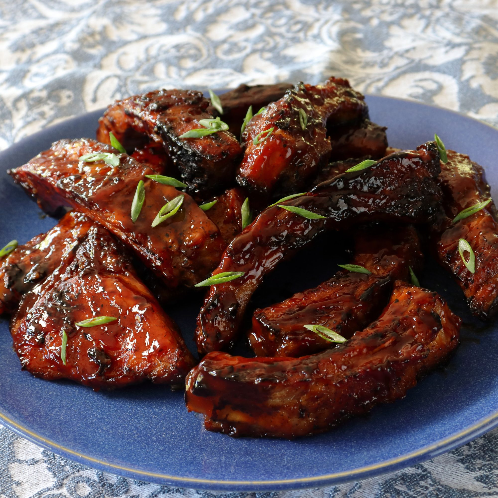

Grilled Sticky Ribs

Pork ribs that are cooked, sliced, and then glazed with sticky sauce.
The time required to follow this recipe is:
- 15 minutes preparing
- 2 hours and 15 minutes cooking
- 2 hours and 30 minutes chilling
Ingredients
- 4 teaspoon kosher salt
- 4 teaspoon white sugar
- 1 teaspoon freshly ground black pepper
- 1 teaspoon paprika
- 1 teaspoon garlic powder
- 2 racks baby back pork ribs
Glaze
- 1/3 cup ketchup
- 1/4 cup brown sugar
- 2 tablespoons soy sauce
- 2 tablespoons rice vinegar
- 1 tablespoon vegetable oil
- 1 pinch cayenne pepper
Steps
- Preheat oven to 250 degrees F (120 C).
- Mix salt, sugar, black peper, paprika, and garlic powder for dry rub inside a small bowl and set it aside.
- Line a large sheet pan with heavy-duty aluminum foil and place the ribs on the pan with bone side down.
- Poke with knife while making shallow slits across at an angle and repeat in opposite direction.
- Coat both sides with the dry rub prepared earlier. Flip the rib over to ensure bone side is facing downwards. Wrap tightly with tinfoil
- Transfer to center of preheated over and bake for 2 hours. Remove from oven and let it cool to room temperature.
- Refrigerate until cold and firm for at least 2 hours (or overnight).
- Preheat a charcoal grill until coals are very ashy and hot.
- Remove ribs from the refrigerator, unwrap, and brush off excess fat. Slice between the bones to separate each rib.
- Combine ketchup, brown sugar, soy sauce, vinegar, oil, and cayenne with a spoon in a bowl to make the glaze.
- Place rib in the grill and cook for 2 minutes. Flip and brush over glaze. Repeat glazing until satisified for about 10 minutes more.
- Remove and place on a plate. Apply one more application of glaze.